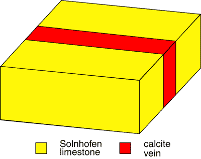
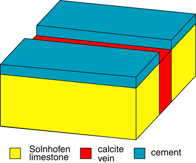
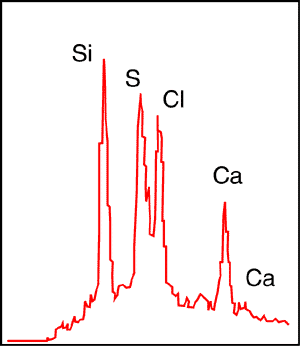
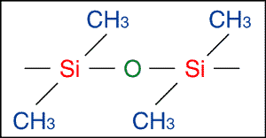
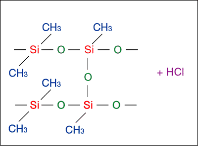

Sobre Archaeopteryx, los astrónomos y la falsificación
por Chris Nedin[Referencias Editadas: 17 de junio de 2002]

Contenido
- Introducción
- Watkins et al. Declaraciones iniciales
- Las principales afirmaciones y evidencias, a favor y en contra
- ¿Por qué?
- La saga continúa
- Conclusiones
- Agradecimientos
- Referencias
Introducción
Archaeopteryx lithographica es considerado uno de los fósiles más importantes jamás descubiertos. Esto no se debe a ninguna naturaleza transicional única, ya que existen muchas formas transicionales (p. ej., la transición de sinápsidos a mamíferos), sino debido al hecho de que Archaeopteryx es un ejemplo tan bueno de evolución. El esqueleto es esencialmente reptiliano, con afinidades cercanas a dinosaurios terópodos, y posee dientes, una larga cola ósea, costillas abdominales y tres dedos en cada mano - caracteres ausentes en aves. Sin embargo, los especímenes también muestran ciertos caracteres aviares como una furcula (hueso de horquilla) y un pubis retrovertido (caracteres también compartidos con algunos dinosaurios) y un hallux oponible (dedo gordo) para posarse. Junto con estos otros caracteres aviares, la característica más espectacular es la impresión distintiva de plumas alrededor de las extremidades anteriores y la cola, plumas casi exactamente iguales a las de las aves modernas.
La autenticidad del Archaeopteryx, o más específicamente la autenticidad de las impresiones de plumas, fue cuestionada en 1985 por un grupo que incluía al Prof. F. Hoyle (astrónomo), al Dr. N. Wickramasinghe (matemático), al Dr. L. Spetner (físico), al Dr. R. Watkins (médico) y a J. Watkins (fotógrafo) en una serie de artículos publicados en la British Journal of Photography (Hoyle et al. 1985; Watkins et al. 1985a, 1985b, 1985c). Curiosamente, uno de los autores (el Dr. Spetner) estaba afirmando que el Archaeopteryx era una falsificación tan pronto como en 1980 (Trop 1983). Aparentemente, basándose únicamente en el hecho de que el espécimen de Londres fue vendido por el Dr. C Haberlein y el espécimen de Berlín fue vendido por el hijo del Dr. Haberlein. (Los Harberleins eran coleccionistas muy conocidos, poseedores de una de las colecciones más finas de fósiles de Solnhofen).
Por supuesto, estas afirmaciones fueron vigorosamente opuestas por el Museo Británico de Historia Natural (BMNH). Varias personas dentro del Museo colaboraron para refutar las afirmaciones de falsificación. Estas fueron A. Charig (curador jefe de fósiles de anfibios, reptiles y aves, BMNH), A. Milner (oficial científico principal - fósiles de anfibios, reptiles y aves, BMNH), C. Walker (oficial científico senior, fósiles de anfibios, reptiles y aves, BMNH), F. Greenaway (fotógrafo principal, BMNH) y P. Whybrow (fotógrafo, BMNH).
Watkins et al. Declaraciones de apertura
En la primera parte de su afirmación de que las impresiones de plumas eran una falsificación, Watkins et al. declararon que,
"Aunque varios otros fósiles reptilianos han sido posteriormente reclasificados como Archaeopteryx, los dos primeros mencionados anteriormente [los especímenes de Londres y Berlín - cn] permanecen únicos en el sentido de que claramente pertenecen al mismo prototipo y poseen impresiones de plumas innegables." (Watkins et al. 1985a, p. 264-265).
Esto fue reiterado por Hoyle et al. (1985, p. 694), quienes sugirieron que
"las únicas impresiones plumosas indiscutibles son, por lo tanto, las de la única pluma de 1860, del espécimen del Museo Británico de 1961 y del espécimen de Berlín de 1877".
Esto es incorrecto. Es cierto que ninguno de los otros especímenes tiene impresiones de plumas tan buenas como las encontradas en los especímenes de Londres y Berlín y que el reconocimiento de plumas en el espécimen de Haarlem no sería posible sin referencia a los especímenes de Londres y Berlín. Sin embargo, el espécimen de Eichstatt tiene claras impresiones de plumas (Wellnhofer 1974) y el espécimen de Maxberg tiene impresiones en las que la estructura de la pluma es discernible como típica de la de las aves modernas (de Beer 1954; von Heller 1959; Charig et al. 1986). No solo eso, las plumas del espécimen de Maxberg refutan claramente cualquier posibilidad de falsificación porque continúan bajo los huesos del esqueleto y están cubiertas por dendritas (von Heller 1959; Charig et al. 1986). (Las dendritas son agregados cristalinos que ocurren a lo largo de superficies planas, con un patrón de ramificación en forma de árbol. A menudo ocurren en grietas o a lo largo de planos de estratificación). El espécimen de Haarlem sí muestra trazos de plumas débiles (Ostrom 1972). También se han descrito trazos de plumas del espécimen de Solnhofen (Wellnhofer 1988). El hallazgo más reciente, el espécimen Solnhofen-Aktien-Verein, también se ha descrito como poseedor de trazos de plumas (Wellnhofer 1993).
Otra afirmación es,
"La importancia de Archaeopteryx radica en el hecho de que representa el único caso indiscutible de un fósil que muestra una transición entre dos clases de vertebrados, aves (pájaros) y reptilia (réptiles)." (Watkins et al. 1985a, p. 256).
Nuevamente, esto es incorrecto. Existen numerosos ejemplos en el registro fósil, siendo probablemente el mejor documentado la transición entre los reptiles sinápsidos y los mamíferos (por ejemplo, Kemp 1982; Benton 1990; Colbert & Marales 1991).
Una tercera declaración se refiere a la fotografía en sí. En 1984, Watkins et al. tomaron fotografías exhaustivas del espécimen de Londres, conservado en el BMNH, sobre película de transparencia a color con una cámara réflex de 35 mm portátil y un flash de ángulo bajo tangencial. Las diapositivas resultantes fueron luego ampliadas proyectando la diapositiva sobre una pantalla lejana y realizando impresiones en blanco y negro (Watkins et al. 1985a). Al describir la técnica utilizada por Watkins et al., comentan,
"Tales [estudios fotográficos] se han realizado anteriormente, pero inevitablemente han estado limitados por las técnicas disponibles en el pasado." (Watkins et al. 1985a, p. 265).
Esto también es incorrecto. Como indica la respuesta del Museo,
"Como fotógrafos profesionales hemos estudiado el fósil bajo diversas combinaciones de fuentes de luz, emulsiones, reflectancia ultravioleta y fluorescencia, fluorescencia ultravioleta filtrada, escaneo intensivo mediante televisión infrarroja y fotomicrografía de alta resolución. Estos estudios han tenido lugar a lo largo de varios años." (Parmenter & Greenaway 1985, p. 458).
De hecho, lejos de ser de ninguna manera superior a otros métodos,
"el examen superficial y las malas fotografías de los autores de los artículos [Watkins et al. - cn] no tienen comparación con el escrutinio minucioso y los estándares exigentes del Museo." (Parmenter & Greenaway 1985, p. 458).
Las fotografías en sí tienen demasiado contraste y un enfoque demasiado suave (Charig et al. 1986), lo que dificulta el estudio detallado y estas
"Las fotografías más recientes comparan extremadamente desfavorablemente con las fotografías del mismo espécimen tomadas por fotógrafos de museos que, hace varias décadas, ya utilizaban iluminación oblicua de bajo ángulo con mucho mayor éxito" (Charig et al. 1986, p. 623) (Véase de Beer 1954 para un ejemplo de esto.).
De hecho, Watkins et al.
"reconocen fácilmente la naturaleza rudimentaria de su fotografía, pero buscaban en el tiempo disponible evidencia para probar o refutar ciertas teorías específicas. Idealmente, primero deberían haber inspeccionado los registros fotográficos del Museo, pero, como siempre, aquellos que sostienen puntos de vista controvertidos prefieren buscar por sí mismos antes de divulgarlos" (Crawley 1985, p. 458).
En otra declaración, los autores afirman,
"Ahora se cree generalmente que el esqueleto es en gran parte reptiliano, excepto por la furcula (hueso de la cola) que es similar al de las aves" (Watkins et al. 1985a, p. 256).
Esto es engañoso. El hallux oponible también es una característica aviar, al igual que la posición del pelvis (aunque esto también ocurre en algunos dinosaurios) (véase, por ejemplo, Ostrom 1976).
Las principales afirmaciones y evidencias, a favor y en contra
Utilizando una serie de fotografías, Watkins et al. afirmaron que las impresiones de plumas eran falsificaciones. El método utilizado para crear la falsificación fue mediante la presión de plumas de pollo en una capa delgada de cemento artificial que rodeaba un pequeño esqueleto de reptil. (Cabe señalar aquí que, aunque uno de los autores, el Dr. Spetner, afirmó que se utilizaron plumas de pollo, las impresiones no corresponden a plumas de pollo, sino que son más similares a las plumas de ave de paso). El cemento habría sido hecho mezclando caliza del mismo depósito con algún aglutinante y que se extendió delgadamente sobre la superficie de los bloques. Como evidencia corroborativa de esto, se citaron varias observaciones:
i) La diferencia entre las texturas superficiales de la piedra caliza en las áreas con plumas y sin plumas fue citada como evidencia de la presencia de una capa de cemento alrededor de las plumas (Watkins et al. 1985a).
La diferencia en la textura superficial es ciertamente real. Sin embargo, Charig et al. (1986) explican que se debe a la impresión del cuerpo del animal en partes de la superficie. Una analogía utilizada fue comparar esto con las diferencias en textura observadas entre una huella humana en lodo y el lodo circundante.
"En otras palabras, fueron las impresiones de las plumas las que causaron las diferencias en la textura superficial; no que una diferencia en la textura superficial (debido a alguna otra causa) permitiera la preservación de las impresiones en algunos lugares y la impidiera en otros" (Charig et al. 1986, p. 623).
Si está presente una capa de cemento, entonces debería ser visible algún tipo de discontinuidad entre la verdadera piedra caliza y el cemento, en la superficie y/o en sección vertical (una sección vertical es una sección cortada a través de la losa, a 90 grados con respecto al fósil). No se ha encontrado tal discontinuidad, incluso en sección vertical. Parece haber una división en la sección vertical mediante la cual una capa superior de 500-850 micrómetros (1 micrómetro = 1/1000 milímetro) está separada de la capa inferior por una banda oscura. Sin embargo, la capa superior muestra la misma estructura granulada que la capa inferior y la estructura es continua a través de los huecos en la banda oscura (Charig et al. 1986). Además, la completa ausencia de burbujas de aire y la presencia de cristales de calcita indican que toda la sección es original. Además, la capa superior es demasiado delgada para recibir cualquier impresión de plumas (Charig et al. 1986). Un punto adicional digno de mencionar aquí es que cualquier material de unión orgánico disponible para un falsificador en el siglo XIX para mezclar el cemento habría mostrado alguna evidencia de grietas o encogimiento. No se ha observado tal grieta o encogimiento.
ii) La presencia de impresiones detalladas de plumas en la losa principal, junto con su ausencia en la superficie general de la losa de contrapeso, fue tomada como evidencia de que la capa de cemento en la losa de contrapeso fue eliminada ya sea porque era demasiado difícil coincidir con las impresiones de las plumas o porque el material se desprendió cuando se martilleó la losa de contrapeso (Hoyle et al. 1985; Watkins et al. 1985b).
Los fósiles de la caliza de Solnhofen se encuentran comúnmente concentrados en una parte de la losa, con solo una impresión tenue en la contraparte. Esto se debe a que la parte que contiene la mayor parte del fósil representa el sedimento de cobertura, en el que el cuerpo del animal sobresalió. La tenue impresión en la contraparte representa la impresión hecha en el lecho de la laguna donde el animal se asentó en el fondo (por ejemplo, Swinburne 1988). En otras palabras, la mayor parte del espécimen yacía proyectándose por encima del fondo marino y fue eventualmente encapsulada dentro del lecho superpuesto. Al dividirse a lo largo de la superficie original del fondo marino, la mayor parte del fósil se conservará en el lecho por encima de la división, mientras que la superficie original de estratificación conservará solo una impresión. Por lo tanto, la parte que contiene la mayor parte del fósil representa el lecho superpuesto. Esta diferencia entre una parte bien conservada y una contraparte mal conservada es bien conocida en los fósiles de Solnhofen. Por lo tanto, utilizar esta preservación diferencial como criterio para falsificación significa que todos los fósiles de Solnhofen deben ser sospechosos.
iii) La aparición en las losas de áreas lisas, aplanadas y ligeramente elevadas que se asemejan a "gotas de goma de mascar" (Watkins et al. 1985a, p. 265), de solo unos pocos milímetros de longitud y que no siempre tienen correspondientes depresiones en la losa opuesta (Watkins et al. 1985b), algunas con huellas de plumas débiles pero detalladas. Esto se reclamó como fragmentos de la capa de cemento perdida que no fue completamente removida (Watkins et al. 1985b). Hoyle et al. (1985, p. 694) afirmaron que estas "gotas" son
"sin ningún lugar a donde ir, ¿deberían la losa principal y la contralosa cerrarse como las hojas de un libro."
En otras palabras, afirmaron que la losa no encajaría ajustadamente con la contralosa ya que las "manchas" no correspondían a ninguna depresión en la contralosa.
Estas "manchas de goma de mascar" parecen ser irregularidades naturales en la superficie de la losa. De hecho,
"El cuidado examen de las superficies de ambas losas principales y contraloza muestra que siempre hay un buen ajuste entre las dos, excepto donde ha sido destruido por preparaciones posteriores. En ningún caso hay una elevación en una losa 'sin lugar alguno al que ir si la losa principal y la contraloza se cierran como las hojas de un libro.'" (Charig et al. 1986, p. 623).
iv) Se alegó que la regularidad de las venas laterales de las impresiones de las plumas indicaba una falsificación, ya que la piedra caliza no podría haberse separado tan uniformemente como para romperse a lo largo de las plumas (Watkins et al. 1985b).
La caliza de Solnhofen es bien conocida por sus planos de estratificación lisos y nivelados a lo largo de los cuales se divide fácilmente, proporcionando una superficie ideal, plana y lisa para su uso en la impresión y para la exposición de fósiles. La textura extremadamente fina, esencial para la impresión, es ideal para preservar las estructuras anatómicas más delicadas, como las medusas de las medusas, las setas peludas de los crustáceos y las membranas alares de los pterosaurios (Charig et al. 1986; Barthel et al. 1990).
v) El aparente "fenómeno de doble golpe" se alegó que indicaba que la misma pluma fue impresa dos veces en una posición ligeramente desplazada y, por lo tanto, era indicativa de una falsificación (Watkins et al. 1985a).
La reproducción de una doble impresión sería más difícil de falsificar que una simple impresión única, lo que hace improbable que un falsificador intentara tal doble impresión. Además, también se observa en el espécimen de Berlín y recientemente ha sido explicado de manera mucho más convincente como que representa dos plumas superpuestas (Rietschel 1985).
vi) La cola es en realidad una gran pluma de la cola y las vértebras caudales son en realidad el eje central de la pluma (Watkins 1985a).
No solo está la cola "obviamente segmentada" (Charig et al. 1986, p. 625), sino que también se pueden ver plumas individuales unidas a las vértebras mediante ligamentos (de Beer 1954; Charig et al. 1986).
Aparte de los comentarios anteriores, Charig et al. (1986, p. 623-624) citan pruebas adicionales contra una posible falsificación.
"Nuestra evidencia concluyente sobre la autenticidad del holotipo de Archaeopteryx, sin embargo, se proporciona por lo que parecen ser una serie de líneas finas en la losa principal que se extienden en diversas direcciones a través de las impresiones de las plumas en la región del ala anterior; algunas de ellas atraviesan los elementos óseos del esqueleto y llegan hasta la cola. Son difíciles de detectar a simple vista, pero su presencia se muestra con gran claridad mediante fotografía ultravioleta con iluminación crítica. Asociadas en algunos lugares con la mancha lineal más fácilmente visible de color naranja-marrón, presumiblemente son grietas de cabello y generalmente están llenas de materia mineral. Estas grietas también están presentes en la losa contrapuesta en posiciones exactamente iguales."
Esto indica que no hay una capa de cemento intermedia entre las dos losas, como lo demuestra la presencia de dendritas de dióxido de manganeso que han crecido sobre la impresión de la pluma en algunas áreas. Estas también coinciden con precisión en las dos losas, incluso en detalle microscópico (Charig et al. 1986).
¿Por qué?
Watkins et al. ofrecieron dos razones para la falsificación, ambas implicando al entonces Superintendente de los departamentos de Historia Natural del Museo Británico, Richard Owen (Runyard 1985). En primer lugar, sugirieron que Owen falsificó las impresiones para proporcionar evidencia en apoyo de las ideas de Darwin sobre la evolución. Dada la hostilidad de Owen hacia Darwin y sus ideas (no hacia la evolución, meramente hacia las ideas de Darwin sobre la evolución), esto es extremadamente improbable. La otra razón fue que Owen tendió una trampa a Darwin, para tentarlo a que se hiciera el ridículo declarando que el fósil era prueba de la evolución y luego revelando que la "evidencia" era una falsificación. Sin embargo, esto es absurdo. Owen mismo realizó una descripción detallada del espécimen (Owen 1863), exponiendo así a sí mismo y su reputación al ridículo en caso de que el espécimen resultara ser una falsificación. Además, aunque Darwin conocía el espécimen, hizo solo una mención pasajera a él, describiéndolo como "esa extraña ave Archaeopteryx" (Darwin 1866). Sabía que un solo espécimen no podía probar sus ideas sobre la evolución.
La Saga Continúa
En 1988, Spetner, Hoyle, Wickramasinghe y Magarits publicaron un trabajo adicional sobre el análisis de dos pequeñas muestras de roca tomadas del espécimen de Londres, una de la región de la pluma (llamada FM) y otra de un lado de la losa, lejos del fósil (llamada MM). Después de que se completaran los análisis, se hicieron varias afirmaciones.
"Nuestra postura es que las impresiones de plumas fueron falsificadas en un fósil de un reptil volador." (Spetner et al. 1988, p. 15).
Los únicos reptiles voladores conocidos (excluyendo Archaeopteryx y formas relacionadas) son los pterosaurios. Sin embargo, Archaeopteryx no posee la morfología esquelética que le permita volar de la misma manera que lo hacían los pterosaurios. Los pterosaurios se han encontrado en la caliza de Solnhofen, completos con impresiones de las membranas alares. No se ha encontrado ningún reptil fósil con una morfología esquelética similar a la de Archaeopteryx que posea estas membranas. Spetner et al. no ofrecen ningún comentario sobre cómo este "reptil volador" logró volar sin la ayuda de plumas o, aparentemente, una membrana similar a la de los pterosaurios. De hecho, es probable que tal reptil solo pudiera volar si poseía plumas.
"Las grietas finas que reportan que aparecen a través de la región emplumada podrían haber ocurrido naturalmente bajo la premisa de la falsificación. A medida que la piedra experimentaba un ligero movimiento, una grieta en la piedra subyacente tendería a atravesar una capa delgada de cemento que había sido colocada en la superficie." (Spetner et al. 1988, p. 16).
Esto no explica lo que se observa. La "grieta" había sido naturalmente rellenada con calcita antes de la supuesta falsificación, por lo que el espacio de la grieta para iniciar la propagación ascendente ya no existía (fig 1).

Figura 1.
No solo eso, sino que si la grieta se propagara hacia arriba, habría un hueco - dentro de la grieta - entre la parte superior de la calcita que rellena la grieta original y la parte superior de la capa añadida de cemento (fig 2).

Figura 2.
Sin embargo, el análisis de la losa muestra que la situación es como la que se muestra en la Fig 1. Por lo tanto, para que Spetner et al. tengan razón, no solo la grieta tiene que propagarse hacia arriba, sino que el relleno tiene que movilizar y llenar el espacio entre la parte superior antigua de la losa y la parte superior de la capa de cemento. Esto no puede ocurrir simplemente mediante un "movimiento ligero" de la losa. La presencia de varias de estas grietas en la configuración mostrada en la Fig. 1, refuta la presencia de una capa de cemento. La explicación de Spetner et al. (1988) no es viable.
"Con respecto a la afirmación de que los patrones dendríticos aparecen en la región de las plumas, solo podemos decir que se equivocaron. La Fig. 1 muestra el mismo patrón dendrítico al que se refirieron, pero lo muestra con mucho más detalle que su figura. La Fig. 1a es una fotografía de la misma área mostrada por Charig et al. La Fig. 1b es un mapa del área mostrada en la Fig. 1a para permitir al lector localizar el detalle en la fotografía, cuya visualización puede facilitarse mediante el uso de una lupa. En la Fig. 1, el patrón dendrítico se puede ver que yace totalmente fuera de la región alar, solo adyacente a ella en el borde inferior del patrón. El contorno del ala se indica en la Fig. 1b mediante una línea doble gruesa. Obsérvese que el patrón dendrítico yace totalmente por encima del ala y solo la toca en el borde inferior. . . . . El museo nos niega cualquier acceso adicional al fósil, por lo que tenemos que conformarnos con las fotografías que ya teníamos. En cualquier caso, lo que está claro es que los patrones dendríticos no yacen sobre las plumas como afirmaron Charig et al." (Spetner et al. 1988, p. 16, énfasis original).
La afirmación de que el patrón dendrítico no se encuentra sobre las plumas es falsa. La Fig 3b de Charig et al. (1986) muestra claramente el patrón dendrítico superpuesto a las impresiones de las plumas (nota: esto es más claro en la losa contraparte, fig. 3b, no en la losa ilustrada por Spetner et al. - posiblemente porque no fotografiaron la losa contraparte?). También la afirmación de Spetner et al. se basó en sus fotografías de baja calidad de una zona y un "mapa" bastante crudamente dibujado. Charig et al. (1986, p. 624) declaró claramente que los dendritos "han crecido sobre las plumas en lugares" (énfasis añadido). Hay más de una ocurrencia. Esto, combinado con las fotografías publicadas de mayor calidad en Charig et al. (1986, fig. 3) que muestran claramente los dendritos superpuestos a las plumas, significa que esta refutación por parte de Spetner et al. es poco convincente.
"Las Figs 4 son fotografías de microscopía electrónica de barrido (SEM) de las muestras. Una fotografía típica del MM mostrada en la Fig 4a, que muestra granos de calcita que varían en tamaño desde aproximadamente 1 a 5 micrómetros. Estos granos son típicos de la fina estructura carbonatada que se esperaría encontrar en la piedra caliza de Solnhofen. El FM, por otro lado, puede verse que consiste en un material similar con la adición de una sustancia no cristalina desconocida." (Spetner et al. 1988, p. 16-17)
Debe señalarse que su fig. 4 comprende 6 fotografías SEM, una del material de la matriz y 5 del material de la pluma. Es difícil comparar con precisión las dos muestras ya que el SEM del material de la matriz se muestra a una mayor magnificación que los del área de la pluma (con la posible excepción de las figs. 4c y 4f que muestran primeros planos del "material anómalo", pero estos dos no incluyen escamas). Por lo tanto, cualquier diferencia visual aparente en la composición general de las dos muestras (excluyendo la "sustancia anómala") es un artefacto de la resolución diferencial. Parece no haber evidencia de un aglutinante fino de ningún tipo en la matriz rocosa de la muestra FM (pluma). De hecho, la matriz parece idéntica a la muestra MM (matriz).
"La sustancia desconocida presenta diversas formas. En algunos casos tiene una apariencia de varilla a la cual se han adherido granos de carbonato, como se observa en las Figs 4b y 4c. En otros casos esta sustancia tiene una forma extraña como se muestra en las variadas ampliaciones de las Figs 4d, 4e y 4f." (Spetner et al. 1988, p. 17)
La forma "en varilla" es larga, delgada y filamentosa. La "forma extraña" es una masa amorfa y redonda, de 0,0025 mm de diámetro. Los granos de carbonato adheridos a la sustancia desconocida son extremadamente pequeños, de 0,0006 mm.
"Observe que los granos de carbonato se encuentran tanto por encima como por debajo de la sustancia no cristalina. Si el material se hubiera aplicado simplemente sobre la superficie del fósil como conservante, como propone el museo, se esperaría encontrarlo yaciendo totalmente por encima de los granos de carbonato." (Spetner et al. 1988, p. 17, énfasis original).
Esta afirmación no está respaldada por las fotomicrografías. Estas muestran que el material desconocido está claramente separado de la matriz de carbonato. Parece que yace completamente por encima de la matriz de granos de carbonato. Spetner et al. sugieren que, dado que el material no está en la superficie, no pudo haber sido introducido recientemente, excepto como parte de un cemento. Sin embargo, el material desconocido claramente no forma parte de ningún cemento. Además, el tamaño de la muestra (varios microgramos) significa que la superficie bajo examen está solo a unos pocos décimos de milímetro por debajo de la superficie original - aunque es difícil determinar dónde estaba la superficie original, ya que no hay indicación de orientación en las fotomicrografías - por lo tanto, no se puede descartar la introducción en cavidades minúsculas en la superficie. Los granos de carbonato que recubren la sustancia desconocida son muy pequeños y probablemente fueron desalojados durante el proceso de limpieza y/o fundición, y se adhirieron al material desconocido de la misma manera en que el polvo se adhiere a las superficies.
"Un análisis químico por rayos X de la sustancia desconocida en la Fig. 4f se muestra en la Fig. 5. A baja energía de irradiación (10 kV), el analizador muestra picos de calcio, silicio, azufre y cloro. A mayor energía de irradiación (25 kV) aparecen picos de zinc y plomo. La intensidad de los rayos X emitidos por los elementos detectados en la sustancia desconocida de la muestra FM fue relativamente baja. Esta baja intensidad sugiere que el componente químico principal de la sustancia desconocida tiene un número atómico demasiado bajo para aparecer en los análisis. Dado que nuestro instrumento no detecta elementos cuyo número atómico es menor que el del sodio, solo podemos sospechar que la sustancia desconocida es principalmente carbono y que probablemente es de origen orgánico. El tamaño de la muestra que recibimos del Museo no permitió un análisis químico verdadero en el que se pudieran identificar sustancias orgánicas." (Spetner et al. 1988, p. 17).
Su Fig. 5 está etiquetada como "Resultados de luminescencia de rayos X del cuerpo amorfo mostrado en la Fig. 4f". Sin embargo, esto es incorrecto. El análisis se obtuvo mediante Espectrometría de Dispersión de Energía, y "luminescencia de rayos X" no es un término utilizado para describir análisis de rayos X. El análisis produjo picos para calcio, como era de esperar, pero también para silicio, azufre y cloro (véase la Fig. 3) —elementos no usualmente asociados con materia orgánica.

Figura 3.
El pico de azufre debe considerarse sospechoso ya que la baja resolución (140-150 ev) de la espectrometría de dispersión de energía no podrá diferenciar entre un pico de azufre Ka y un pico de plomo Ka, especialmente a 10 kV. A 25 kV aparece un pico de plomo, lo que indica la presencia de plomo y, por tanto, al menos una parte del "pico de azufre", a 10 kV, debe considerarse plomo (de nuevo una sustancia no asociada con la materia orgánica).
Hay varias cosas que deben señalarse en este punto:
- Alguno tiempo antes de la extracción de muestras del Archaeopteryx, el espécimen fue limpiado a fondo para eliminar la suciedad acumulada y los conservantes antiguos.
- Este proceso fue altamente exitoso, pero no 100% exitoso.
- Este proceso no se llevó a cabo en condiciones 'limpias' o libres de polvo.
- Este proceso también requirió cierto cepillado vigoroso del especimen lejos de los huesos reales (especialmente el área de las alas).
- Una vez limpiado, se tomó una matriz de goma de silicona.
Al tener en cuenta estos hechos, se presenta una explicación mucho más probable.
La "sustancia desconocida" analizada por Spetner et al. fue, con toda probabilidad, un fragmento de caucho de silicona que se había incorporado justo por debajo de la superficie de la losa durante su fase fluida. Pero ¿produciría un trozo de caucho de silicona el espectrografo de rayos X mostrado? Bueno, la fórmula química del caucho de silicona se muestra en la Fig. 4.

Figura 4.
La gran cantidad de silicio encontrada en el caucho de silicona puede explicar el pico de silicio observado en el espectrógrafo. En cuanto a la afirmación de que la baja intensidad de los rayos X emitidos
"sugiere que el componente químico principal de la sustancia desconocida tiene un número atómico demasiado bajo para aparecer en los análisis. Dado que nuestro instrumento no detecta elementos cuyo número atómico es menor que el del sodio. Solo podemos sospechar que la sustancia desconocida es principalmente carbono, y que es probable que sea de origen orgánico." (Spetner et al. 1988, p. 17)
La presencia de carbono, hidrógeno y oxígeno en la goma de silicona (véase la Fig. 4), todos con números atómicos inferiores al del sodio, puede explicar esto, sin necesidad de invocar materia orgánica.
¿Y qué hay del pico de cloro? Bueno, la presencia de cloro es un problema si el material es de origen orgánico, pero no lo es si el material es caucho de silicona. El caucho de silicona se fija comúnmente con sustancias llamadas triclorosilanos (SiCl3H) [¡sin premios por adivinar a qué se refiere el "-cloro-"! :-)], cuya mezcla resulta en la unión de largas cadenas poliméricas del caucho (Fig. 5).

Figura 5.
Un subproducto de esta reacción es HCl. Por lo tanto, el pico de cloro podría representar el fijador de triclorosilano no reaccionado, o un residuo de HCl.
No se presenta evidencia de la presencia de un cemento unido orgánicamente. Las fotomicrografías indican que no hay diferencia en la matriz del área fósil en comparación con la piedra caliza. No se detectó materia orgánica en las muestras analizadas. La presencia de carbono orgánico es una sugerencia presentada por Spetner et al., pero es una sugerencia que es inconsistente con los análisis químicos presentados en el artículo. Estos análisis sugieren que el material anómalo analizado por Spetner et al. es más probable que sea goma de silicona de un molde preparado antes de que se tomara la muestra de roca, que un residuo orgánico de - o incluido en - algún tipo de cemento.
Hoyle y Wickramasinghe parecen seguir confundidos sobre el estilo de preservación de Archaeopteryx.
"El fragmento original de roca que contenía el auténtico fósil de Compsognathus probablemente se dividió con un sesgo de huesos hacia la losa principal, pero el sesgo no pudo haber sido tan marcado como vemos . . " (Hoyle & Wickramasinghe 1986, p. 51).
Como señala Swinburne (1988), la fractura es una propiedad fundamental de la roca (se fractura a lo largo de un plano de estratificación, dejando el fósil mayormente en un solo lado. Además,
"creemos que sería imposible que una criatura similar a un ave se fosilizara de tal manera que las impresiones de decenas de miles de barbas de plumas estuvieran todas confinadas de forma ordenada en una sola superficie, incluso si se supone posible encontrar esa superficie única inicialmente desconocida que funciona hacia adentro desde el límite de un trozo de roca" (Hoyle & Wickramasinghe 1986, p. 59).
Como explica Swinburne,
"Hoyle y sus colegas aplicaron incorrectamente la teoría de la deposición, sin tener en cuenta la postura del fósil. Archaeopteryx cayó boca arriba con las alas extendidas sobre una superficie extremadamente plana y bien consolidada. Fue cubierto por un pulso de sedimento suspendido que cayó sobre el estanque estancado en el que yacía. Las alas fueron luego aplanadas contra este plano por el peso del sedimento superpuesto." (Swinburne 1988, p. 276).
Esta superficie sería finalmente la que se dividiría, resultando en la preservación asimétrica de la parte y su contraparte.
Conclusiones
La evidencia alegada por Watkins et al. para indicar que las impresiones de plumas son una falsificación parece ser fácilmente explicable por procesos naturales. El estudio detallado del espécimen de Londres tanto a través de la superficie como en sección vertical no ha proporcionado ninguna evidencia que respalde la afirmación de que está presente una capa de cemento. El método alegado haber sido utilizado para producir la falsificación no puede explicar la presencia de finas líneas que se cruzan sobre el fósil, ni los dendritas coincidentes en la losa y la contralosa, que ocurren encima de las impresiones de las plumas. Las impresiones de plumas en el espécimen de Maxberg, a pesar de las afirmaciones contrarias, son claramente identificables como tales. En este caso, la falsificación del tipo previsto por Watkins et al. puede descartarse debido al hecho de que las impresiones se encuentran debajo de los elementos óseos del esqueleto.
Algo que debería ser obvio para cualquiera es que
"Cualquier conclusión sobre la autenticidad del fósil debe basarse en la mejor evidencia posible. Las fotografías son solo un ingrediente de dicha evidencia" (Parmenter & Greenaway 1985, p. 458).
Watkins et al., sin embargo, citan como evidencia de sus afirmaciones un conjunto de fotografías "rudimentarias", "pobres" que tienen "demasiado contraste y un enfoque demasiado suave", sin examinar las fotografías del Museo, que son mucho más extensas y de mejor calidad.
Las afirmaciones de que las plumas de Archaeopteryx son falsas han demostrado ser infundadas. Por lo tanto, la afirmación de que "la importancia de Archaeopteryx radica en el hecho de que representa el único caso indiscutible de un fósil que muestra una transición entre dos clases de vertebrados, aves (pájaros) y reptilia (reptiles)" ha sido confirmada. En otras palabras, Watkins et al. afirman que Archaeopteryx representa una forma transicional, pero no puede ser aceptada como tal porque es una falsificación. Dado que la afirmación de falsificación no ha sido corroborada, Archaeopteryx debe ser, por lo tanto, un ejemplo de una forma transicional según la propia admisión de Watkins, et al. (a pesar del hecho de que caracterizan erróneamente a Archaeopteryx como el "único" caso).
Dudo, sin embargo, de que esta cita en particular aparezca en cualquier literatura creacionista.
Agradecimientos
Los agradecimientos van a Rich Trott por sugerir mejoras. El texto fue originalmente convertido al formato HTML para el archivo talk.origins por Brett Vickers.
Esta es una contribución paleontológica de la Universidad de Ediacara.
[Volver a las FAQs de Archaeopteryx]
Referencias
Barthel, K.W.; Swinburne, N.H.M. & Conway Morris, S. (1990) Solnhofen: Un estudio en paleontología mesozoica. Cambridge University Press, Cambridge. 236pp. ISBN 052133344X.
de Beer, G. (1954) Archaeopteryx lithographica Un estudio basado en el ejemplar del Museo Británico. Museo Británico, Londres. 68 pp.
Benton, M.J. (1990) Paleontología de Vertebrados: biología y evolución. Unwin Hyman, Londres. pp 377. ISBN 0045660018
Charig, A.J.; Greenaway,; F. Milner, A.N.; Walker, C.A. & Whybrow, P.J. (1986) Archaeopteryx no es una falsificación. Science, 232: 622-626.
Colbert, E.H. & Marales, E. (1991) Evolución de los vertebrados: un historia de los animales con columna vertebral. Wiley-Liss, Nueva York. pp 470. ISBN 0471850748
Crawley, G. (1985) Técnicas fotográficas de Archaeopteryx (respuesta). British Journal of Photography, 132: 458.
Darwin, C. (1866) Sobre el Origen de las Especies por Medio de la Selección Natural o la Preservación de las Razas Favoritas en la Lucha por la Vida, 4ª Edición. John Murray, Londres.
von Heller, F. (1959) Un tercer hallazgo de Archaeopteryx de las placas calcáreas de Solnhofen de Hangenalttheim/Mfr. Erlanger Geologische, 31: 1-25.
Hoyle, F. & Wickramasinghe, N.C. (1986) Archaeopteryx El Ave Primordial. Christopher Davies Ltd., Swansea.
Hoyle, F.; Wickramasinghe, N.C. & Watkins, R.S. (1985) Archaeopteryx. British Journal of Photography, 132: 693-694.
Kemp, T.S. (1982) Reptiles mamíferos y el origen de los mamíferos. Academic Press, Nueva York. pp 363. ISBN 0124041205.
Ostrom, J.H. (1976) Archaeopteryx y el origen de las aves. Biological Journal of the Linnean Society, 8: 91-182.
Ostrom, J.H. (1972) Descripción del espécimen de Archaeopteryx en el Museo Teyler, Haarlem. Proceedings Koninklijke Nederlandse Akademie Van Wetenschappen, B, 75: 289-305.
Owen, R. (1863) Sobre el Archaeopteryx de von Meyer, con una descripción de los restos fósiles de una especie de cola larga procedente de la piedra litográfica de Solenhofen [sic]. Philosophical Transactions de la Royal Society de Londres, 153: 33-47.
Parmenter, T. & Greenaway, F. (1985) Técnicas fotográficas del Archaeopteryx. British Journal of Photography, 132: 458.
Rietschel, S. (1985) Frankfurter Allgemeine Zeitung. 8 de mayo de 1985: 31.
Runyard, S.A. (1985) Actas de la reunión - 23 de mayo de 1985.
Spetner, L.M.; Hoyle, F.; Wickramasinghe, N.C. & Magaritz, M. (1988) Archaeopteryx - más pruebas de una falsificación. The British Journal of Photography, 135: 14-17.
Swinburne, N.H.M. (1988) The Solnhofen Limestone and the preservation of _Archaeopteryx_. Trends in Ecology and Evolution, 3(10): 274-277.
Trop, M. (1983) ¿Es Archaeopteryx una falsificación? Quarterly de la Sociedad de Investigación Creacionista, septiembre de 1983: 121-122.
Watkins, R.S.; Hoyle, F.; Wickrmasinghe, N.C.; Watkins, J.; Rabilizirov, R. & Spetner, L.M. (1985a) Archaeopteryx - un estudio fotográfico. British Journal of Photography, 132: 264-266.
Watkins, R.S.; Hoyle, F.; Wickrmasinghe, N.C.; Watkins, J.; Rabilizirov, R. & Spetner, L.M. (1985b) Archaeopteryx - un comentario adicional. British Journal of Photography, 132: 358-359, 367
Watkins, R.S.; Hoyle, F.; Wickrmasinghe, N.C.; Watkins, J.; Rabilizirov, R. & Spetner, L.M. (1985c) Archaeopteryx - más evidencia. British Journal of Photography, 132: 468-470.
Wellnhofer, P. (1974) Das fünfte esqueleto de Archaeopteryx. Palaeontographica A, 147: 169-216.
Wellnhofer, P. (1988) Un nuevo ejemplar de Archaeopteryx. Archaeopteryx, 6: 1-30.
Wellnhofer, P. (1993) El séptimo ejemplar de Archaeopteryx de la caliza de Solnhofen. Archaeopteryx, 11: 1-47.
[Volver a las FAQs de Archaeopteryx]